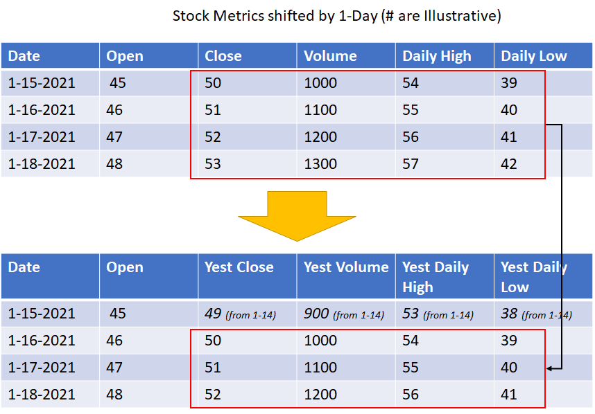

This project seeks to generate investment returns that can outperfrom a simple 'buy and hold' trading strategy over a 3 month period by applying Autoregressive Integrated Moving Average (ARIMA), Gradient Boosting Regression (GBR), and Recurrent Neural Network (RNN) models to generate daily high and low stock price predictions.
Delta Airlines (DAL) stock was choosen for the model due to the fact that the airline stock was recovering during the testing window (Jan 4th, 2021 - March 31st, 2021) and thus, yield more interesting results than choosing a stock that was plummeting or relatively flat during this period.
Disclaimer: This project is entirely intended for research purposes and applying the algorithms and/or trading strategies outlined below is no guarantee of positive returns
A combination of stock technical indicators and basic stock metrics were used as features in the the GBR and RNN model. To prevent data leakage, the previous day's metrics were shifted forward in order to be used as a feature for current day's prediction. For example, DAL's closing price on 1/1/2021 was used as a feature in the prediction for the next day, 1/2/2021.

The root mean square error (RMSE) was used to tune the initially hyperparameters in the models, but the overall return using the trading strategy described below was used to determine the optimal model. Details on each model's final parameters and results can be seen by clicking on its respective tab
A trading strategy using the GBR model's predictions yielded the greatest return. However, it was ~25% less ($6.20 per share vs $8.11 per share) than the return of a simple 'Buy and Hold' strategy (Buy on Day 0 and sell at the end of the 3 months).